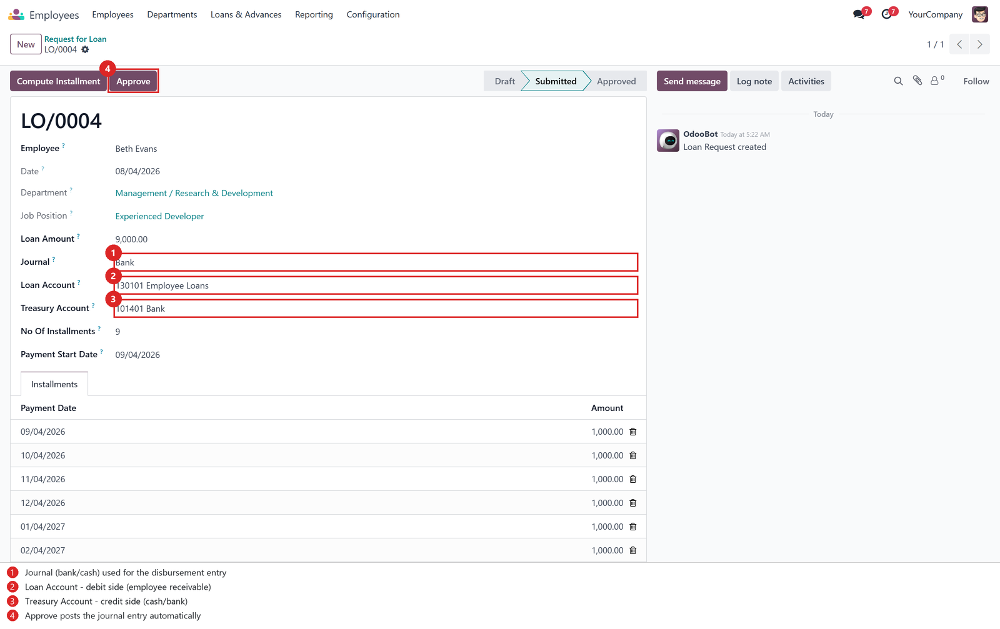
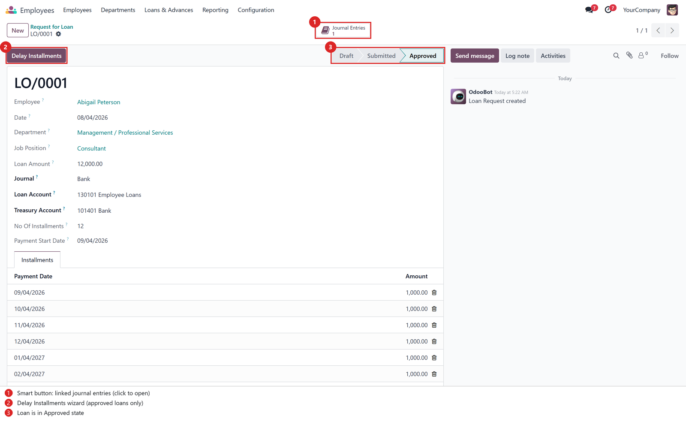
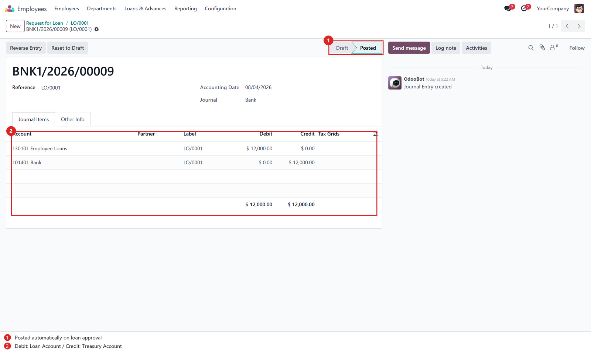
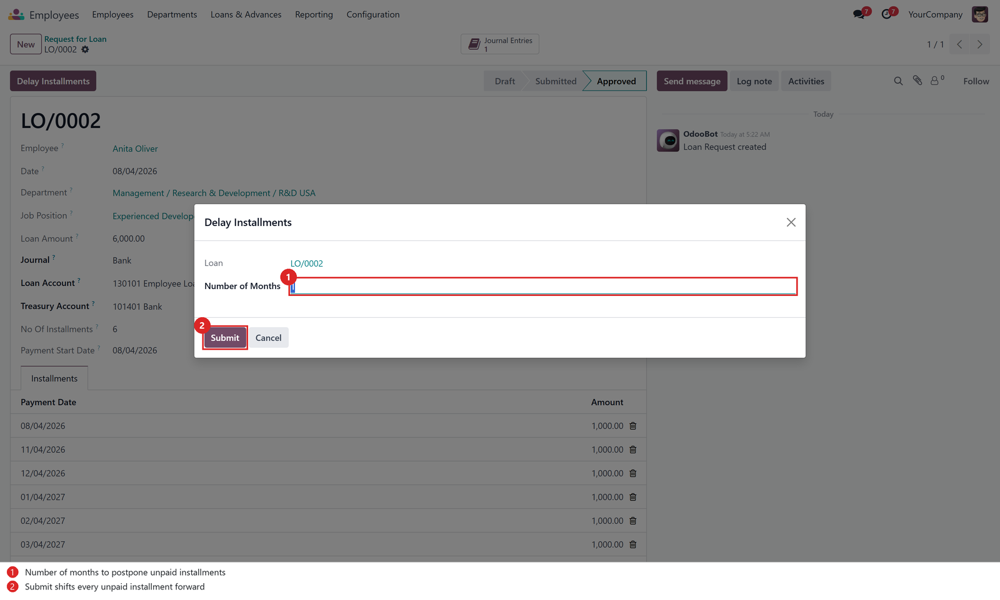
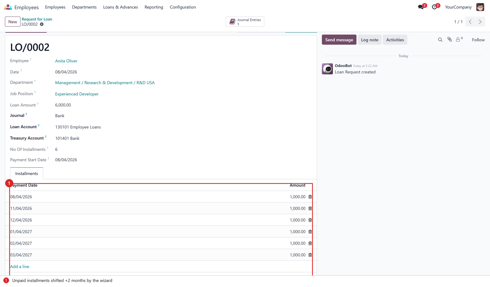
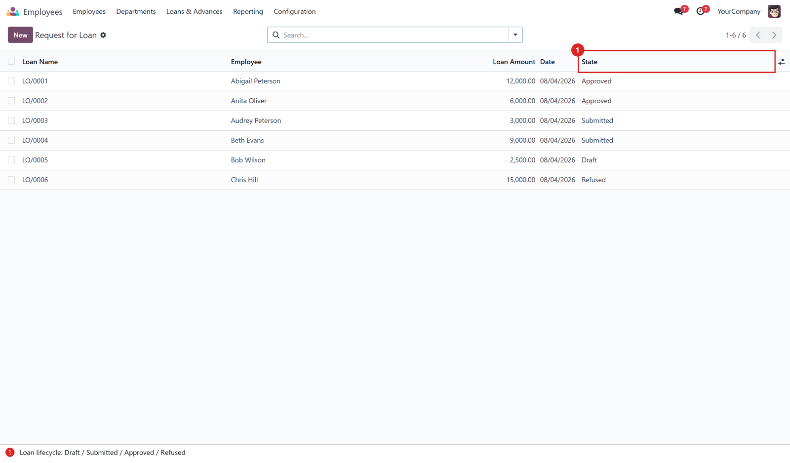

Complete employee loan management — loan requests with installment schedules, payroll deduction, automatic journal entries on approval, a Journal Entries smart button, and an installment delay wizard.
Odoo 18 Human Resources Accounting
📑 Automatic Journal EntryWhen a loan is approved, a balanced journal entry is created and posted automatically: debit the Loan Account (employee receivable), credit the Treasury Account (cash/bank disbursement). |
📚 Journal Entries Smart ButtonA smart button on the loan form shows the number of linked journal entries (matched by the loan reference) and opens them in one click. |
⏰ Delay Installments WizardPostpone the repayment schedule of an approved loan: shift every unpaid installment forward by N months. Paid installments are never touched. |
Three new fields are added to the loan form: Journal (bank/cash), Loan Account (debit side) and Treasury Account (credit side). Compute the installment schedule, submit, and approve.

On approval the journal entry is created and posted automatically. The Journal Entries smart button appears in the button box, and the Delay Installments button becomes available in the header.

The entry debits the Loan Account and credits the Treasury Account for the full loan amount, with the loan number as reference.

Open the Delay Installments wizard on an approved loan, choose the number of months, and submit. Only unpaid installments are rescheduled.

After the delay, unpaid installment dates are shifted forward while paid lines and running totals (Total / Paid / Balance) stay consistent.

All loan requests with their lifecycle states: Draft → Submitted → Approved / Refused / Canceled.

| Account | Debit | Credit |
|---|---|---|
| Loan Account (employee loan receivable) | Loan Amount | — |
| Treasury Account (bank / cash) | — | Loan Amount |
The entry is posted in the selected bank/cash journal with
the loan number (e.g. LO/0001) as its reference.
hr, hr_payroll, account.hr.loan, hr.loan.line — loan requests and installments, with journal_id, loan_account_id, treasury_account_id, move_count.hr.loan.delay.wizard — shifts unpaid installment dates by N months.action_approve() — validates the accounting setup, then creates and posts the disbursement entry.LO other inputs and deducted by the bundled salary rule.tests/test_hr_loan_accounting.py).